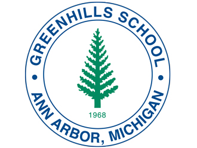
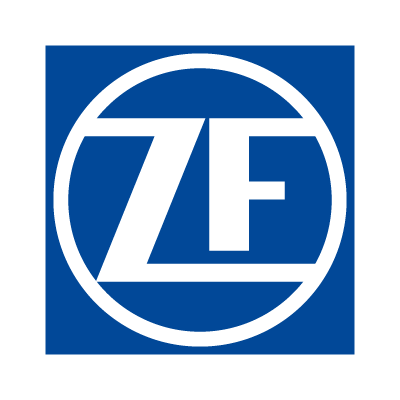
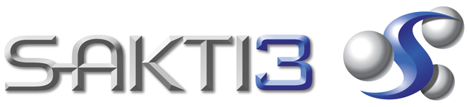
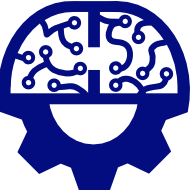

Sponsors
Click on each logo to visit their websites!
Greenhills School is a college preparatory school located in Ann Arbor, Michigan for grades 6 through 12. The school hosts Team 5530, and has a robotics space designated for the team.

Founded in 1903, the Ford Motor Company has been developing vehicles for over 110 years. Along the way, Ford has also dedicated itself to funding STEM education, as well as programs encouraging growth in STEM, such as Team 5530.
Creator of automotive parts, ZF has sponsored several FRC teams for several years, including Team 5530.
Sakti3 has been developing batteries, and with their sponsorship of local FRC teams, encouraging STEM education and activities as well.
First Alumni and Mentors Network in Michigan (FAMNM) was founded by University of Michigan students with the intent to connect teams with FRC alumni and mentors. The organization has been assisting Washtenaw County teams for several years.